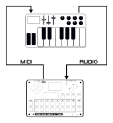
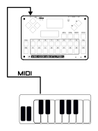

MIDI¶
The PGB-1 features a hardware MIDI interface (TRS type A input and output) for connecting to external synthesizers, drum machines, and controllers, allowing you to integrate it into larger setups.
Output¶
Sending notes and CC to external gear¶
Tracks 12 to 16 are assigned to external MIDI by default, but any of the 16 tracks can be switched to MIDI mode in the track settings. When a track is in MIDI mode, its sequencer data is sent as standard MIDI messages through the MIDI output port instead of being routed to the internal synthesizer.
Each MIDI mode track has the following configurable parameters:
Parameter |
Description |
|---|---|
MIDI Channel |
Output channel (1-16) for notes and CC messages |
CC A-D |
Four assignable CC controller numbers (0-127) |
CC Labels |
User labels for each CC controller |
CC messages: Each step has four CC slots (A, B, C, D). When a CC slot is enabled on a step, the corresponding CC message is sent using the controller number configured in the track settings. This allows per-step automation of external synth parameters.
All the standard sequencer features work in MIDI mode: note modes (single note, chord, note-in-chord, arpeggiator), trigger conditions (always, fill, probability, x-of-y patterns), note repeats, and shuffle.
Enabling MIDI Mode¶
To switch a track to MIDI mode:
Enter Track Mode (Track)
Select the track to configure
Navigate to the last settings page (Track Mode)
Use ↑ / ↓ to select MIDI
MIDI Clock Output¶
PGB-1 sends MIDI clock messages through the MIDI output port:
Timing Clock (24 pulses per quarter note)
Start when playback begins
Stop when playback is stopped
MIDI clock output is enabled by default and can be toggled in the MIDI settings menu. Non-clock messages (notes, CC) are always sent regardless of this setting.
Hybrid Setup¶
Connect the audio output of an external MIDI synths to the stereo line input of the PGB-1. The external synth sound will be mixed with the internal sound engines in a seamless hybrid setup. You can send the line input to one of the internal FX (Reverb, Overdrive, Bitcrusher).
{kind=link}

Input¶
{kind=link}

MIDI Clock Input¶
PGB-1 can synchronize its sequencer to an external MIDI clock source. Upon receiving a Start or Continue message, the PGB-1 switches to external clock mode and follows incoming Timing Clock ticks until a Stop message is received. When using external clock, the play/stop actions and internal BPM settings are ignored.
MIDI clock input is enabled by default and can be toggled in the MIDI settings menu.
Playing and recording notes¶
Incoming MIDI Note On, Note Off, and CC messages are handled based on the MIDI channel:
Channel 1 – Messages are routed to the currently selected (editing) track:
In step edit mode, a Note On writes the note value and velocity into the current step. If the step had no trigger set, it is automatically set to “Always”.
In performance mode, notes and CC messages are played live through the editing track’s voice.
Channels 2-16 – Messages are forwarded directly to the internal synthesizer. Each internal synth voice listens on a fixed channel:
Channel |
Voice |
|---|---|
2 |
Kick |
3 |
Snare |
4 |
Cymbal |
5 |
Bass |
6 |
Lead |
7 |
Chord |
8 |
Sample 1 |
9 |
Sample 2 |
10 |
Reverb |
11 |
Overdrive |
12 |
Bitcrusher |
This allows an external MIDI controller or DAW to play any of the PGB-1’s synth voices directly by sending on the appropriate channel.
Internal synth voices also support Control Change messages:
Setting |
Control Change |
Values |
|---|---|---|
Parameter 1 |
0 |
0-127 |
Parameter 2 |
1 |
0-127 |
Parameter 3 |
2 |
0-127 |
Parameter 4 |
3 |
0-127 |
Volume |
4 |
0-100 |
Pan |
5 |
0-100 |
Engine |
6 |
0-127 (depending on the list of engines implemented for the track) |
FX Send |
7 |
0: Bypass, 1: Overdrive, 2: Reverb, 3: Bitcrusher |
LFO Rate |
8 |
0-127 |
LFO Amplitude |
9 |
0-127 |
LFO Amplitude Mode |
10 |
0: Positive, 1: Center, 2: Negative |
LFO Target |
11 |
0: Param1, 1: Param2, 2: Param3, 3: Param4, 4: Volume, 5: Pan |
LFO Shape |
12 |
0: Sine, 1: Triangle, 2: Ramp Up, 3: Ramp Down, 4: Exponential Up, 5 Exponential Down |
LFO Loop |
13 |
0: Repeat, 1: One Shot |
LFO Sync |
14 |
0: Disable, 1-127: Enable |
Note that Volume, Pan, Engine and FX Send settings are not available for the FX tracks (Reverb, Overdrve, Bitcrusher)
Tips¶
Recording Tracks as MIDI¶
Any synth track can be converted to MIDI, this means you can use MIDI output to record beats, melody, and patterns in your DAW.
Connect PGB-1 MIDI output to your computer
Turn every track in “MIDI mode” and assign a different MIDI channel to each of them
Record the incoming MIDI in your DAW
Press play to start internal sequencer
If you want to only record a single track, set this track to solo (hold Play, press Track, press the number of the track you want to record (1-16)).